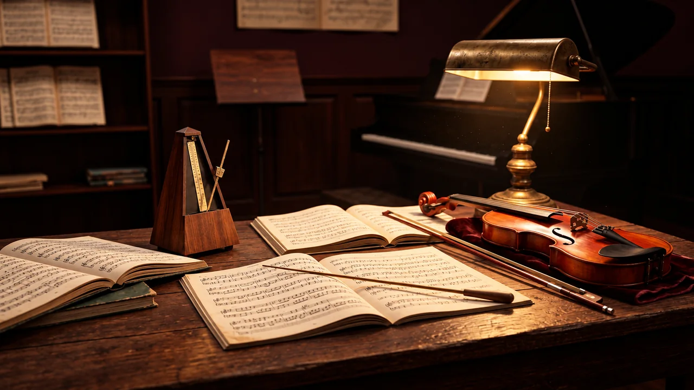

TU OBJETIVO · TU RITMO
Mi ruta Walamort

Organiza tu práctica de lectura, oído y ritmo. El diagnóstico orienta tu estudio; no es un examen de admisión ni una certificación.
Mi objetivo
Diagnóstico de fundamentos
Nueve preguntas de lectura, ritmo y armonía. La habilidad auditiva se observa en los dictados que completes, no en estas preguntas.
Puedes comenzar sin diagnóstico o hacerlo para ajustar la recomendación.
Mi rutina de hoy
Se priorizan dificultades según tus últimos cinco resultados de cada actividad o el diagnóstico. El nivel recomendado es orientativo; puedes cambiarlo dentro del ejercicio.
Mi progreso por habilidad
Siguiente paso: armonía aplicada
Refuerza funciones, inversiones y conducción de voces en Armonía y Aula universitaria.
De la práctica a la creación
Aplica lo aprendido en una pieza original de cuatro compases. La creación no se califica como correcta o incorrecta.
Tus preferencias y resultados permanecen en este navegador. No hay cuenta ni sincronización. Marcar una tarea significa práctica realizada, no dominio de la habilidad.
Practica en pentagrama y papel
Lee con agilidad
Practica tres claves y siete armaduras, sin límite o con tiempo por nota.
Explora tu entonación
Escucha una referencia y compara una nota sostenida con el micrófono. Las mediciones se guardan aparte de los cuestionarios; también hay una demostración sin micrófono.
Abrir práctica de entonación →Lee el ritmo antes de tocar
Estudia figuras, silencios y pulsos faltantes en compases simples. Este resultado de lectura visual es independiente de la precisión al marcar el ritmo.
Practicar lectura rítmica →Conecta las notas con las cuerdas
Explora el diapasón de guitarra o bajo y encuentra notas en afinación estándar.
Abrir diapasón →Enseña con Walamort
Prepara una clase con las herramientas existentes, comparte la sesión y descarga una guía reutilizable.
Abrir planificador docente →